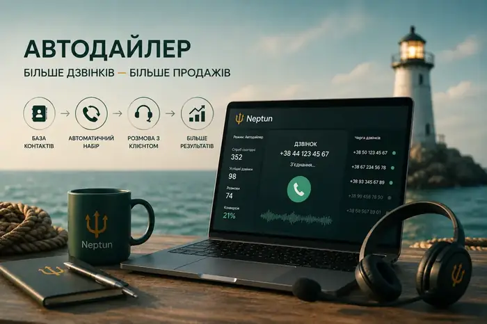
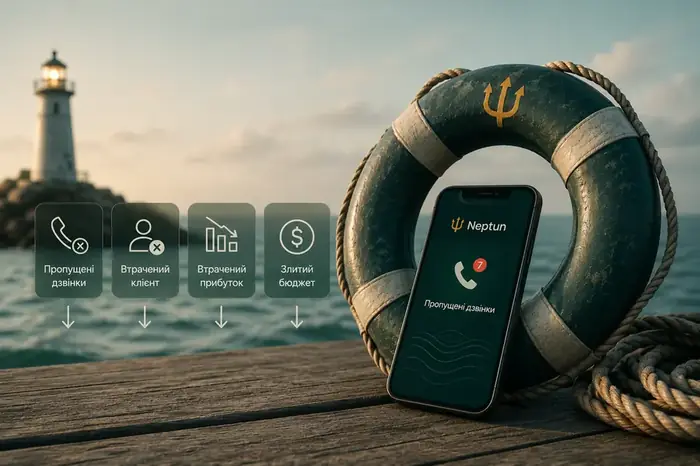
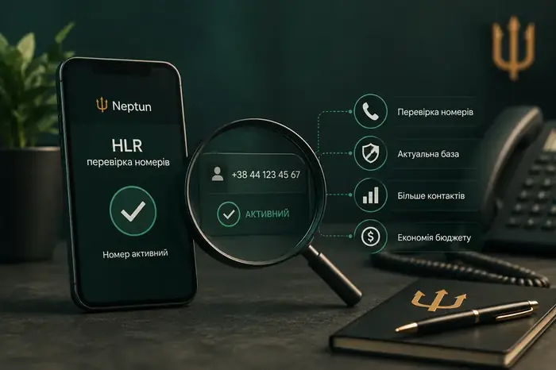

Автодайлер для відділу продажів: як менеджерам робити більше дзвінків

Скільки часу менеджер витрачає не на продажі?
Уявімо робочий день менеджера. Знайти номер → скопіювати → вставити → набрати → почекати → почути «зайнято» → записати результат → перейти до наступного контакту.
І так десятки або сотні разів. Це не продажі. Це ручна робота.
Що робить автодайлер?
Автодайлер автоматизує процес набору номерів із бази. Менеджер не витрачає час на ручний набір — система допомагає організувати послідовний процес дзвінків.
Особливо корисно це для:
- outbound-продажів
- call-центрів
- lead generation
- повторних продажів
- роботи з великою клієнтською базою
- реактивації старих лідів
Але кількість дзвінків — не головна мета
Важливо не просто зробити 500 дзвінків. Потрібно отримати більше якісних контактів.
Тому автодайлер найбільш ефективний у зв’язці: HLR → автодайлер → Smart Calls → AI-дзвінки → аналітика.
HLR допомагає перевіряти доступність номерів перед дзвінком, а автоматизація дозволяє зменшити кількість ручних операцій.
Що отримує менеджер?
Менше рутини. Більше часу на розмову. Більше контактів за робочий день.
А керівник отримує статистику, на основі якої можна оцінювати результативність команди.
Хочете так само у своєму бізнесі?
Підключення за 15 хвилин, без документів і KYC.
Отримати консультацію →Інші статті за темою
Віртуальна АТС для бізнесу: що це, як працює та навіщо вона відділу продажів
Якщо у компанії вже не один менеджер, десятки або сотні дзвінків на день, кілька рекламних каналів та CRM, звичайного мобільного телефону стає недостатньо.

Як не втрачати лідів через пропущені дзвінки: 7 проблем відділу продажів
Клієнт залишив заявку. Менеджер не відповів. Що робить клієнт? У більшості випадків — телефонує конкуренту.

HLR-перевірка номерів: що це та навіщо вона потрібна бізнесу
У базі можуть бути неактивні номери, помилкові контакти й дублікати. Якщо менеджери дзвонять по всій базі вручну, компанія витрачає час і ресурси.